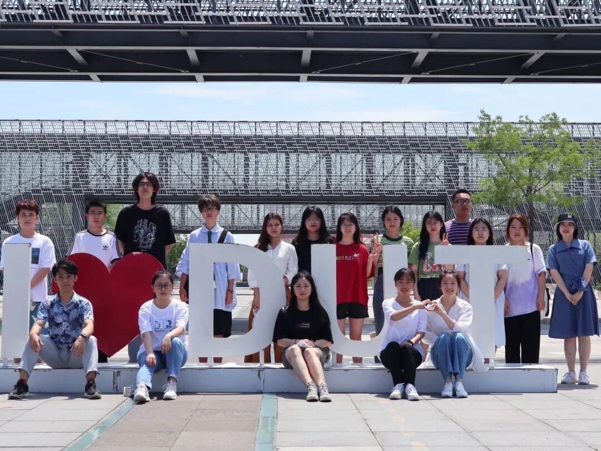
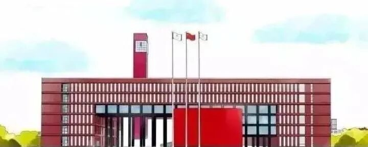
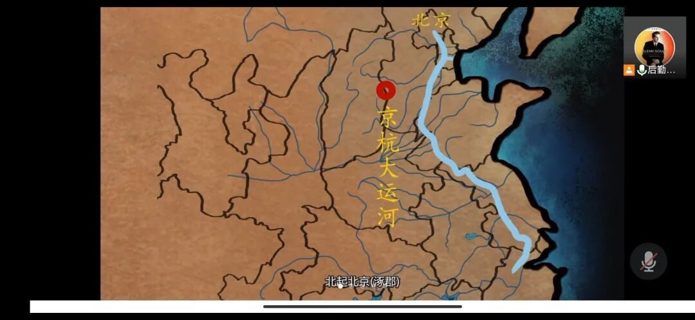

【行者无疆 寓绻淮扬】行醉淮扬许无疆



行醉淮扬许无疆

为了调研淮扬文化的内涵及其对人文精神的影响，本着“服务母校、宣传大工，传承大工优良学风、展示我校学子风采”的实践原则，深入了解淮扬文化的历史发展及现代背景等问题，积极号召本校大学生了解、宣扬、传承淮扬文化。
7月28日，由于疫情影响，考虑到同学们的安全，盘锦校区大工学子以腾讯会议为平台开展了意义非凡的线上实践活动，过程中不断学习感悟，收获颇丰。

在调研活动正式开始前，实践团通过发放调查问卷和随机对同学进行采访，录制采访视频，总结校区学子对扬州的了解程度，继而有针对性地进行后期推广，并且实践团用官Q发布了二十一次文化科普，其中涉及到扬州文化的方方面面。
经过团队前期的充分准备和调查，实践团制定了合理的线上安排。

扬州

春风十里扬州路

历时五天的调研活动，实践团的十八名成员一起在扬州旅游纪录片和非遗宣传片中共同感悟运河历史，学习中华传统文化精髓，剪纸艺术和雕版技艺。
在扬州美食文化纪录片中看到商老三的烧烤店十年如一日的坚守，徐永珍奶奶对灌汤包的精益求精，这些淮扬小吃的坚守者让成员们感受到扬州的烟火气息、人文风情。
在大运河传奇和扬州盐商纪录片中感慨属于扬州这座淮左名都独特的历史底蕴，看大运河这千年文脉连通南北的繁荣与昌盛，增强民族文化自豪感。

线上参观了扬州博物馆和扬州瘦西湖，欣赏了元代景德镇瓷器的元霁蓝釉白龙纹梅瓶，栩栩如生的画面足以让见者叹为观止，黛瓦白墙，柳树河畔，成员们纷纷表示一人观一湖便可以将时光虚度。
每天的观看纪录片活动结束之后，成员们会在群里发表自己的所见所感，即使隔着屏幕，遥遥千里仍热情不减，热烈地讨论江南的历史名城，扬州的山清水秀和风情万种。
为了扩大影响力，我们在每次的文词上反复斟酌，图片里来回挑选，用QQ空间和微信公众号向大家告知行踪，推广调研成果，阅读量日益增加，取得了极佳的效果。
最后，我们有幸邀请到扬州八怪纪念馆办公室主任倪越老师进行采访。通过采访深入了解到扬州八怪的精神内涵及艺术魅力，并结合现代化发展探究大运河对“一带一路”经济带的帮助作用。
成员们极为珍惜这次与这样学富五车的学者进行交谈，交流过程中积极提出问题，除了扬州文化外，倪越主任还谈及了许多领域，用通俗易懂的语言为我们普及了各种各样的知识。
最后的采访像画龙点睛一般为这次的线上旅程画上了圆满的句号。
短暂却充实的线上调研活动结束了，通过这次对淮扬文化的调研成员们满载而归，对这次活动心中有千言万语想要表达，每位成员都用推送的形式坦白了对扬州文化的情深意重。
同时也有力地扩大了淮扬文化的影响力，展现了大工学子脚踏实地、勇担传承重任的风采，锻炼了个人的能力和品质，也用自己的能力回报了社会与学校。这次共赴扬州之约的旅行，一定会成为每一个成员难以忘却的回忆。
来源 | 行者无疆实践团
图片 | 行者无疆实践团
文字 | 李驰瑞
排版 | 赵庭芳
审核 | 付 媛